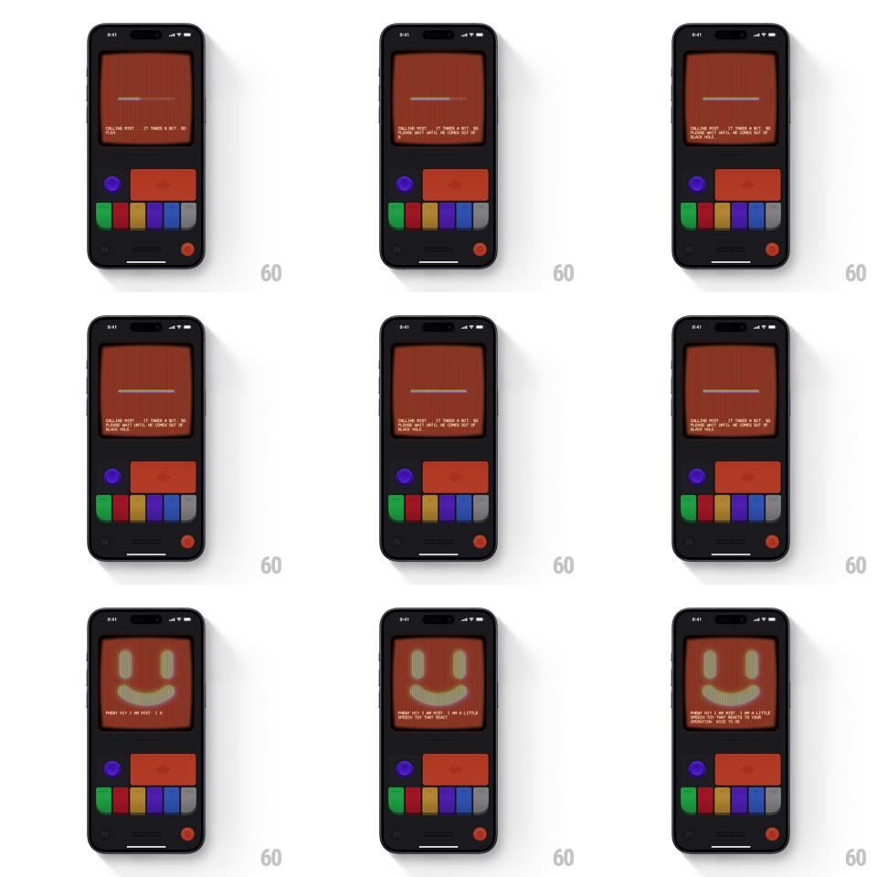

Media
Frame-by-frame

Rebuild this interaction 1:1: Mist's loading/welcome - on the console's rust-red CRT, a thin signal bar sweeps and pulses while "CALLING MIST..." types out, then the bar blooms into a big friendly pixel smiley as the welcome message types itself below.

Rebuild this interaction 1:1: Mist's loading/welcome - on the console's rust-red CRT, a thin signal bar sweeps and pulses while "CALLING MIST..." types out, then the bar blooms into a big friendly pixel smiley as the welcome message types itself below. ## Integration Integration: stack-agnostic spec - springs given as stiffness/damping, timed motions as duration + curve; map every value to your framework and animation library of choice. ## Scene Dark console body, CRT screen in a rust/red palette: boot state shows a thin horizontal signal bar center-screen with "CALLING" microtext; end state shows a large pixel smiley face with typed welcome copy below. Control cluster below (purple knob, red button, color pills, power dot) stays static. ## Motion spec Pattern: boot sequence with signal-bar-to-face morph. - Boot: the signal bar sweeps horizontally back and forth (translateX across ~60% of screen width, 1.4s per pass, ease-in-out at turnarounds) like a seeking scanner. - "CALLING" appears first, then the line types character by character (35ms/char): "CALLING MIST... IT TAKES A BIT. SO PLEASE WAIT UNTIL HE COMES OUT OF BLACK HOLE". - On "arrival": the bar stops center, blinks twice (150ms on/off), then stretches vertically (scaleY 1 -> 40, 400ms, ease-out) blooming into the full smiley face with a single noise frame at the midpoint. - The smiley settles with a soft luminance breathe (+/-4%, 2s loop) while the welcome line types out: "PHEW! HEY, I AM MIST. I AM A LITTLE GREASY GUY THAT REACTS TO YOUR OPERATION MODE". - The cursor keeps blinking at the end of the final line (500ms square-wave). ## Calibration - One boot cycle is roughly 6-8s end to end - unhurried, like hardware warming up. - The face bloom is a stretch, not a fade - geometry morphs from bar to face. ## Reduced motion Skip the sweep; face and text appear directly. ## Don't miss - The palette stays strictly rust-red on dark - the smiley is brighter red, never white. - Scanlines run continuously through every state, including the sweep.